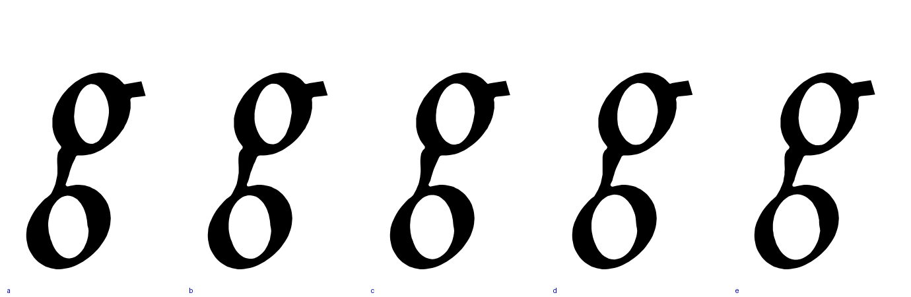
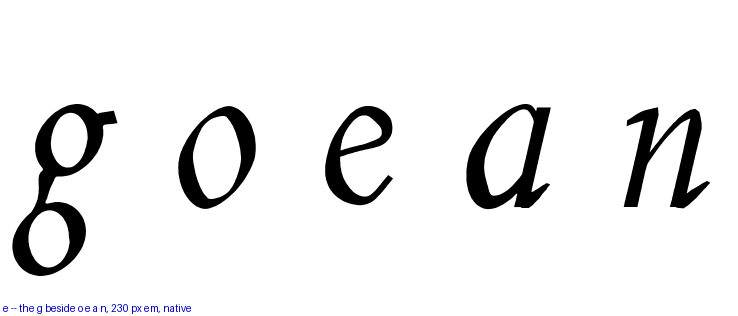
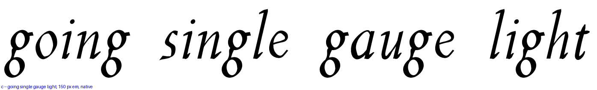
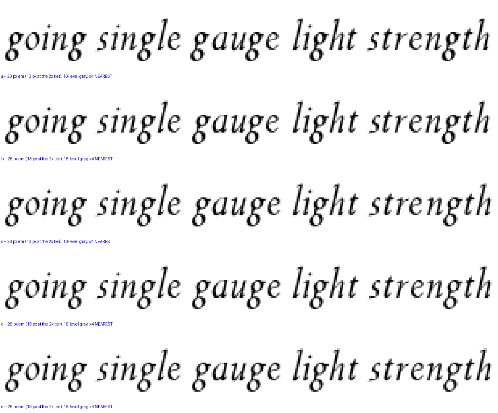

You are right that it is heavy, and it is the heaviest thing in the italic lowercase: measured on the built Italic 400, the g’s color reads 0.307 against the family’s 0.275 median, its stroke 63.2 against 58.7, and its thick 82.0, beaten only by the v. Five arms below thin the width table of both loops together, so the shapes, the centers and round 205’s crown anchor are all untouched — only the walls move. Note the g’s color runs higher than its stroke alone would explain, because two bowls and a neck are packed into one x-height; that is why matching the family on stroke and matching it on color are different rungs.
| arm | wall | stroke | vs family | color | thick |
|---|---|---|---|---|---|
| a | 1.00 | 63.2 | +8% | 0.307 | 82.0 |
| b | 0.94 | 60.2 | +3% | 0.296 | 77.5 |
| c | 0.90 | 59.5 | +1% — on the family’s stroke | 0.289 | 74.5 |
| d | 0.86 | 56.4 | −4% | 0.281 | 72.3 |
| e | 0.82 | 54.2 | −8% | 0.272 — on the family’s color | 70.0 |



